各角度大头研究——正脸和正侧脸
笔记中截取图像来源于网络，如有侵权请联系我删除。
上次以鲁米斯头开始的研究只是一个开始，它太过通用，又太过粗略（只研究了少女头，又只研究了一个角度），无法具体应用到实践中。
实际上在之前的实践中我就发现我出了很多差错，我脑袋里太关注脸部平面作为圆柱体的表面而缺乏关注它同时也是一个平面，我总是把面甲画的太窄，太向内收，太强调立体。而我喜欢的 BUNBUN 老师，shion 老师（shion 的大头实际上并不出彩，他是靠整体氛围取胜的）的脸的画风都是更接近平面的。
要应用到实践中还需要大量具体研究，我不再妄想直接提出一个心智模型去囊括任何角度任何风格的大头画法，取而代之的是，我去研究各种风格，各种角度的大头，然后再看有何一般规律可以归纳出来，从而最终得到这个心智模型。所谓从特殊到一般。
但说到底，我老说心智模型心智模型，它是以概念的关联存在于我脑子里，又使用文字去表述出来的，但画画上的话，可不能纯粹从概念上去出发了……但我觉得思考这个无意义。
总之，需要去研究：
- 以一种风格为基准（我选 BUNBUN 老师的画风，他的风格从我看刀剑神域开始就十分喜欢……然而后面我又改成研究虫原老师的，因为虫原老师有多个同人本可供参照，同人本中有更多各种角度的素材，这是作为插画师的 BUNBUN 老师所不能及的），平视，俯视，仰视的各转角的大头的形状（这里就不研究那种“平视，然后 pan 镜头时各镜头位置下头结构”，我觉得这种毫无实践价值而且把事情弄复杂）
- 少女，萝莉，OL（就让我这么叫吧！像 HBR 的柳，诗纪那样的……这么说其实由奈也是少女系的诶，虽然是前辈，但是可爱）在各角度下的特殊之处等
这里去研究前者。
但，这里也只是研究整个大头了，关于五官（这和下面的角色类型也是相关的），倒不是现在研究的，虽然必定会涉及到不同角度的五官的问题。
角度的话，水平角度包含：正视，四分之一侧（稍微侧），二分之一侧，四分之三侧，全侧面，四分之五侧（全侧后还稍微往后转），背面。实际上这里说的四分之五侧和背面是很少画的，但这里还是得研究一下。
垂直角度包含：平视，稍微俯视（低头），大俯视，稍微仰视，大仰视。大俯视和大仰视同样是很少画的，看动画的角色的设定集，俯仰均会稍微有一点但不会有很大（其中仰角最大角度似乎比俯角大）。但在插画中，某些喜欢炫技的家伙会画。而为了能在脑子里建立更清晰的印象，我得研究。
但我不会完全遵循 BUNBUN 老师的风格，最主要的，我会修改 BUNBUN 老师画的鼻子的高度，不改变这个，无法把 BUNBUN 老师的大头使用鲁米斯方法去进行研究。
BUNBUN 老师的正脸
重复——这里主要关注大头本身，即五官、头发所安排到的结构上，五官和头发（如果画了）只是为了示意，重点并非它，

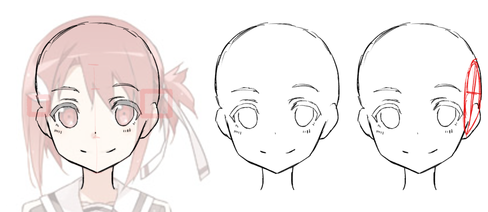
BUNBUN 老师的正脸可以说正中我的萌点，注意：
- 耳朵和脸部平面之间是有距离的，因此这里使用线条分割了它们（但不强调也是可以的，许多画风不会画这里的线条）
- 后脑勺实际上是比脸部平面不连接且更宽的！这一点对正确处理正脸的脸颊的线条很重要，我之前正脸总画太宽的原因就是没有注意到这一点导致我画出错误的面甲，知晓这一点对画出可爱的正脸很重要，非常重要。这还是因为之前的疏失——忘记了切头部球体时是向内切，而面甲在切面上只占前下四分之一半圆（实际上框出来的这里你如果剪光头也能从自己的头上观察到）
- 理解这点可以说是正 脸绘制的最重要的部分了——我把自己从必须联系头顶和脸部边缘线条这个约束中解放出来，在这个约束下，画出来的脸总会怪怪的。
- 不对称！正脸为何要画对称呢？不对称同样可爱，现实中也没有完全对称的脸！能发现立绘是稍微有歪头的，这一歪可把杀伤力提高了一倍
- 友奈的眼睛占据中庭的 60%左右，这样的占比应该是少见的，但年幼感不太明显（还是说其实已经够明显了只是没有和其他作品对比……？），尝试把下巴再往上拉一下……就是幼女感了……
- BUNBUN 老师的鼻子会画得太低，这会让角色有种稍微低头的感觉显得更加可爱，但我不太喜欢这样，而且这也会让中庭占比太大，不好使用鲁米斯法进行分析，所以我把鼻子往上面挪了一点
- 耳朵从眼睛顶部开始（或者说眉毛略下处），到鼻底结束。耳朵画大也是很可爱的
- 友奈的嘴咧得特别大，很元气我很喜欢，其实 BUNBUN 老师的表情都会画的比较夸张，我对夸张的表情很有好感，太多画师喜欢画面瘫了
- 脸部的转折（实际上是下颌骨的转折）在嘴巴高度，但这个是随画风变的，画更高是常见的，画再低……就变成小圆画风了
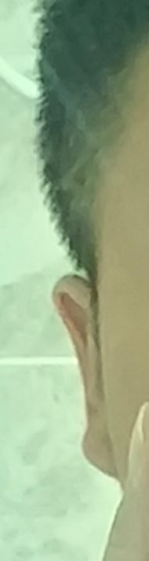
测试
使用第二点提到的逻辑，再分析一下 BUNBUN 老师的另一幅立绘。
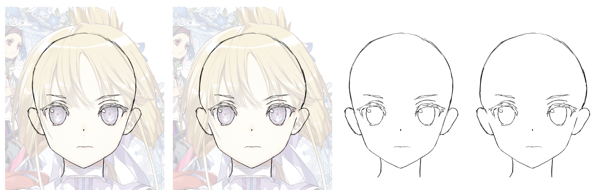
注意到 BUNBUN 老师的画风也有变化，眼睛，睫毛的画法可以说全变了。
但也注意到，我改了中庭高度后，眼睛几乎是占了中庭的 80%了，但还是没有年幼感，这是否是说，是否有年幼感，和中庭的关系实际上不大？还是得看下庭的高度和形状？
再分析一下 HBR 的正脸。
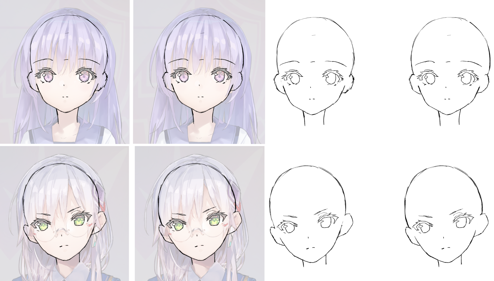
但在 HBR 这个立绘上的话，区别实际上不大明显（我怀疑由希的我还画过头了），两者都挺可爱，这里的重点或许是，不用担心头顶和脸部线条不完全闭合，这里是可以让画师自己决定的，感觉明确了这一点后，突然就能够画正脸了，在尝试拷贝别人的画风的时候，也不会硬是画出奇怪的光头。
以及，之前我说头部最宽处比眉毛稍高，但我发现我其实喜欢最宽处正好在眉毛高度上的画风。
顺便，注意到勾勒作品中的头部结构去进行研究是一个好的方式。
再自己默画一张友奈的正脸做测试：
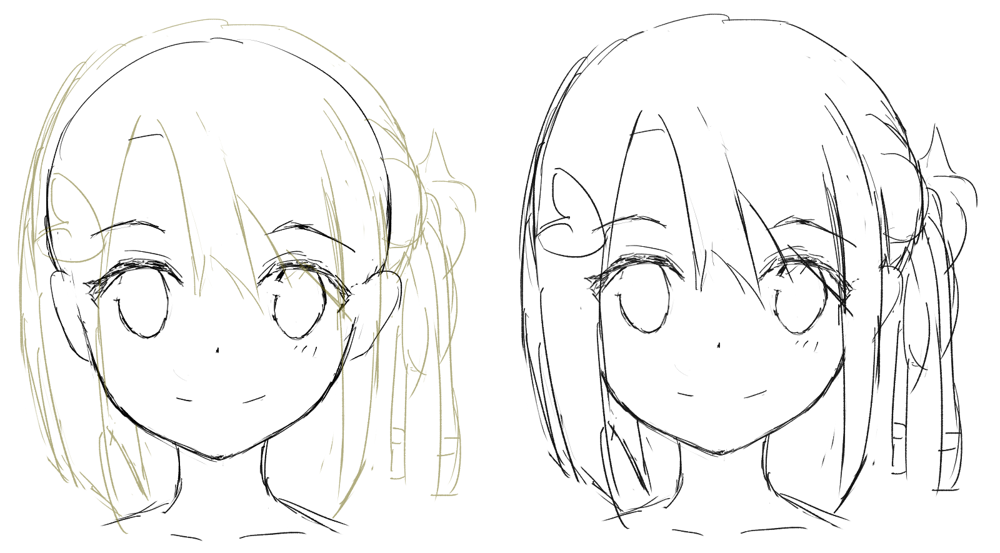
一些离题的吐槽
摸摸自己的脑袋，注意到鲁米斯所说的“切面”，实际上很难说它是个平的结构（绘制头发时会依赖这里的不平），我在想是否把头部球体确实地想象成一个稍微压扁的球会更好？
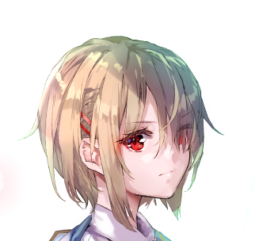
以及，上面默画友奈的正脸的时候，我根本就没切（其实切了后轮廓还是那样）。
这也证明，画画上建立的模型，无论是实操的还是心智上的，总是时不时要抽象泄漏一把，最终它只能成为思考的拐杖而非像编程中那样成为思考的平台。这就让我们必须得下沉，回到原始材料，即现实中的相应实体上……这个必须记到脑子里——模型是拐杖而非地基，你不可完全依赖它，然后在它上面再堆东西，你只可把它当作拐杖，该用就用，该丢掉就丢掉（即该违背就违背）。
但拐杖有拐杖的好——你可以有多个拐杖，比如对头部的抽象，除了鲁米斯头还有其他的抽象，Asaro 头，箱子头……这个不适用，还可以换成其他的。对任何具体问题，多个拐杖加起来，就是“要你命 3000”，成为我想要的“万能拐杖”。因此可以去尝试建立这个“拐杖库”。
就这个意义上来说，应当把绘画中的模型认为是代码模板，拷过来，按需求改，虽然这个比喻有点狭隘了可能。
但……这里是否扯得太远？
上面的内容还是六月底记的，现在是 7 月 7 日，我以 Project 的形式重新回到这里了。现在回过头来，上面根本没研究啥东西嘛！重新开始！这次以虫原老师的画风。选择虫原老师有诸多原因：
- 他是漫画家，有非常多的素材可以参考，而且他的头的角度、表情的变化会很大（后面研究五官，表情我还会回到虫原老师），BUNBUN 老师是插画家，稍微收敛一些
- 虫原老师的画风本身也对我的好球区，十分可爱且生动，顺便他的 CHIBI 画的也超级可爱（许多漫画家笔下的 CHIBI 都没什么魅力，但虫原老师的 CHIBI 让人想反复看）
- 虫原老师的侧脸相当漂亮，堪称绝美，我后面如果要画百合图的话，画侧脸的机会是非常多的，必须得研究它
我又扯太远了，该开始了。素材来自于 exhentai 上的虫原老师的同人本，这个……其实不太厚道。
不过缺点也有……虫原老师的画风在不同本子之间还是有一定变化的，而且作为漫画家，他画的表情太丰富，同时也是出于分镜的不同（如特写会更细节一些），导致脸的结构会有一定变化……但我既然选了他，就坚持到底。
虫原老师的正脸
翻本子翻半天，注意到漫画中其实完全的正脸是很少出现的，都是稍微带点侧脸的，显然正脸的对称性让大家都不太爱画（目前就发现一个本子画师特别喜欢画正脸，他画的也挺可爱的）。
我本来选正脸选的是这一张，但意识到这一张是仰头——虫原老师把特写的仰头的下巴画圆一些，而且雪菜的头发把半张脸遮住了。
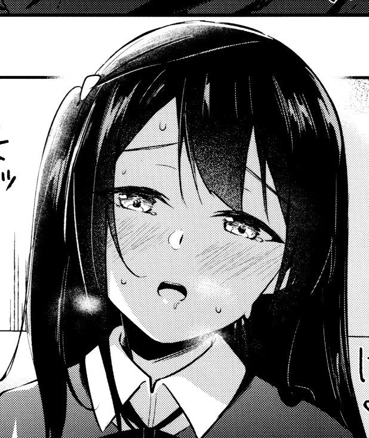
以这张泷奈为基准，它虽然稍微稍微有点侧脸，但也是极为合适的（说到底我又不是画设定集，没必要纠结完全正脸）：
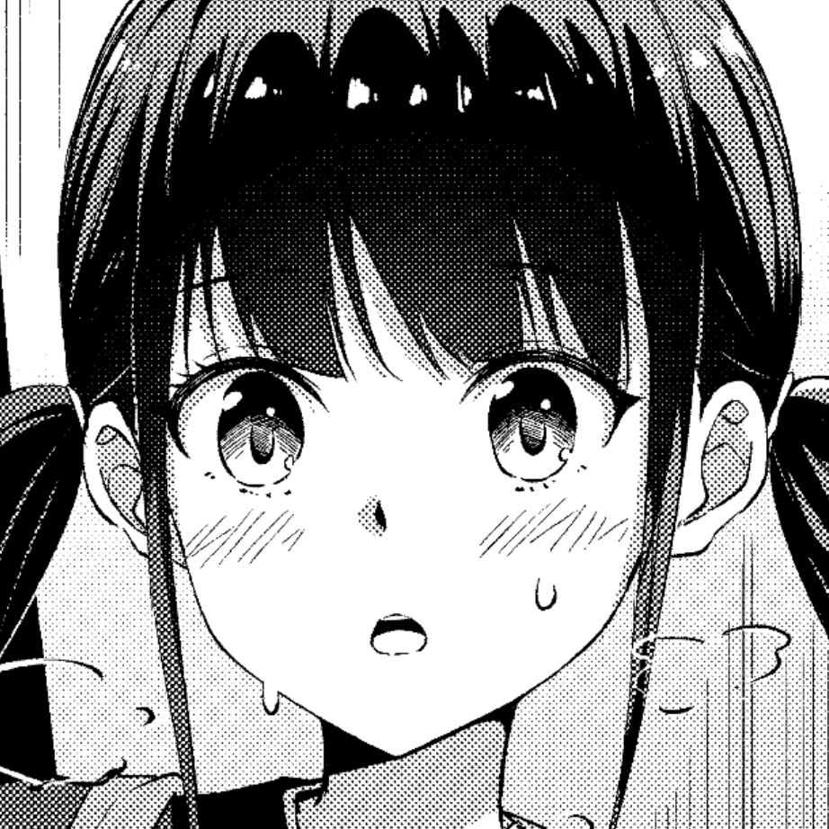
然后，尝试去看一看它的头部的结构，这里也和上面的友奈的头部做对比：
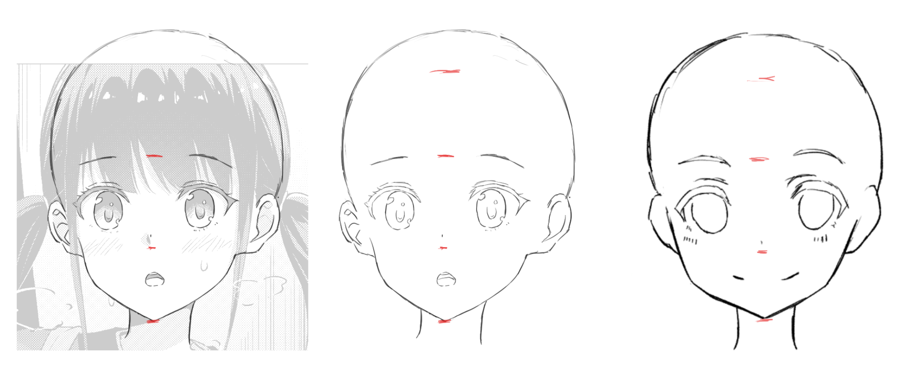
能够注意到：
- 虫原老师的眼睛在头部和中庭的占比显然远小于 BUNBUN 老师的，这让 BUNBUN 老师的画更倾向于可爱，虫原老师的则更加漂亮，相对写实（但仍旧可爱）；注意到虫原老师的头型、眼睛大小和之前研究 HBR 是类似的
- 接上条，这让虫原老师的眉毛看起来比较靠上，而眼睛可以说是处在中庭的正中央（顺便，高度大概是 50% 的中庭）
- 鼻尖比较高（也可能是我点的太高了……），几乎和眼睛下缘平齐
- 下庭高度接近中庭高度，下巴角度相对尖（但转折还是带点柔和），BUNBUN 老师则下庭明显比中庭短
- 虫原老师的头发画的是很薄的，实际上这也是我所喜好的
- 虫原老师的下巴是典型的瓜子脸——颧骨到嘴巴高度的这段线条向内收的很大
然后……再发现不了啥其他东西了。注意到我更喜欢虫原老师的比例，这让漫画家有很大的发挥空间。但这里第 n+1 次提醒自己，要用空间思维看！
但我觉得我对中庭的定义可能是有歧义的，我把鼻尖（即二次元画风中点出的那个点儿）靠下稍微一点的位置认为是鼻底，但这个其实是挺主观的。
和 BUNBUN 老师的整个头部的对比
虽然感觉 BUNBUN 老师的头部明显画的更加扁一些，但 TM 实际用圆圈出来发现其实基本一致……
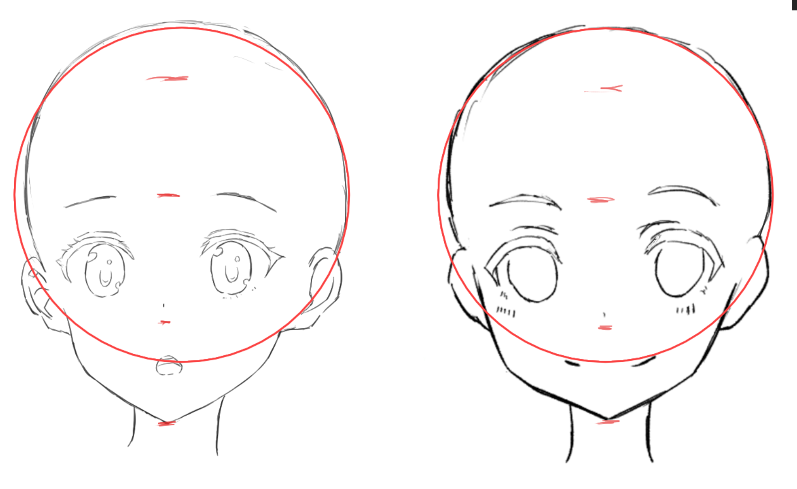
这就很诡异，这或许可以证明重要的还是五官，于是这里把五官都抹掉（然后发现效果仍旧不明显，再调整一下下巴）再看看：
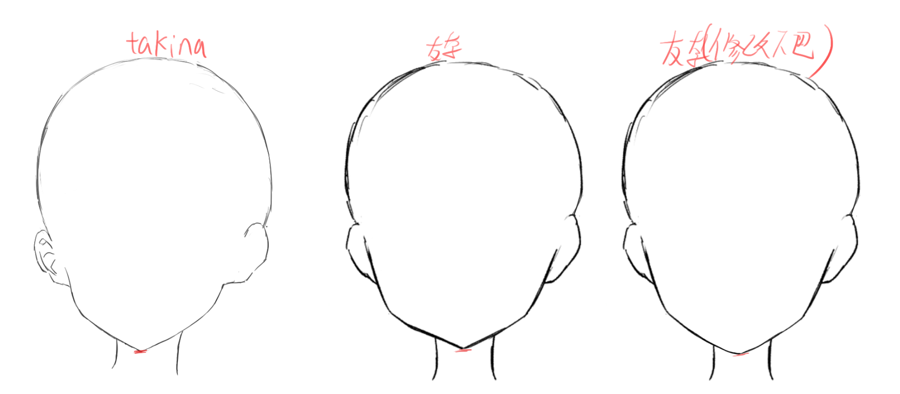
显然——决定整个头型看起来的样子的，主要是下巴！这里再比较一下保留五官的两张友奈：

我不得不感叹，这种做实验的操作，就像通过写测试代码去理解函数工作一样，离开了板绘是做不来的。
但，完全无视五官对头型结构的影响也是错误的。
关于眉毛和眼睛的距离
上面对比两个友奈（的下巴），但我再对比这张 takina 和修改后的友奈，仍旧感觉这张 takina 的头更大一些。
我猜测是眉毛和眼睛的距离的问题，把眉毛画的比较高，和眼睛有一段距离，是二次元画风的常见情况，我之前受写实画风的影响，习惯把它们凑近一些。我在怀疑，是不是因为眉毛和眼睛的距离的关系造成感觉头大？虽然它仍旧是非常匀称的，我将来可能就会画这种画风，但我果然得研究研究。
试验一下就知道了，把眼睛往上挪一些：
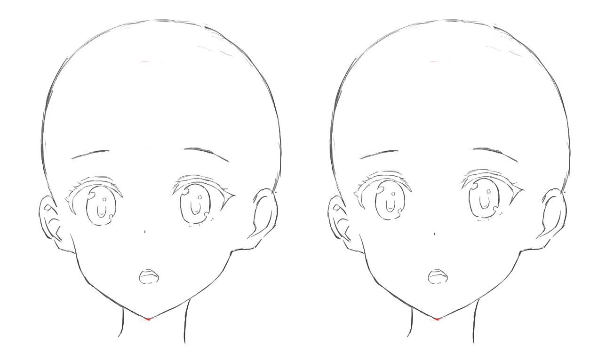
能感觉到，右边就感觉脑袋更小了一点，虽然除了眼睛和鼻子完全没有修改。
但……我又在想，我只挪鼻子的位置，即调整中庭大小怎样？

所以，只调整鼻子其实是也行的……这倒或许可以理解……我说眉毛到眼睛的距离，这个距离是相对于谁的？显然脑袋把鼻子的高度也当成参照系了。而且鼻子很重要（虽然只有那个点），把鼻子一擦整个感觉就变成伏地魔了。
但我也怀疑我是视觉疲劳了，我该明天再看一次。
关于面甲的形状问题
面甲的形状，主要是指的下颌角的位置和角度的问题。

下颌角的位置和角度会很大影响面甲的形状。这里把下颌角的位置和角度作为两个独立参数，是因为同一个位置可以有不同角度的下颌角。下图展示了下颌角，以及不改变下颌角的位置，却改变它的角度的效果（当然，中间的这个需要把头整个改扁一点，但我不改……）
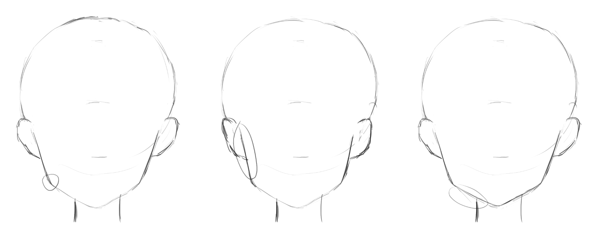
下颌角本身的形状也是可以修改的，虫原老师的下颌角的转折柔和，BUNBUN 老师的转折剧烈，动画中似乎是更多倾向后者的。
测试集
做一下风格迁移工作——用虫原老师的比例再画一幅友奈……算了別友奈了，我最终要画的是布丁，那就布丁。
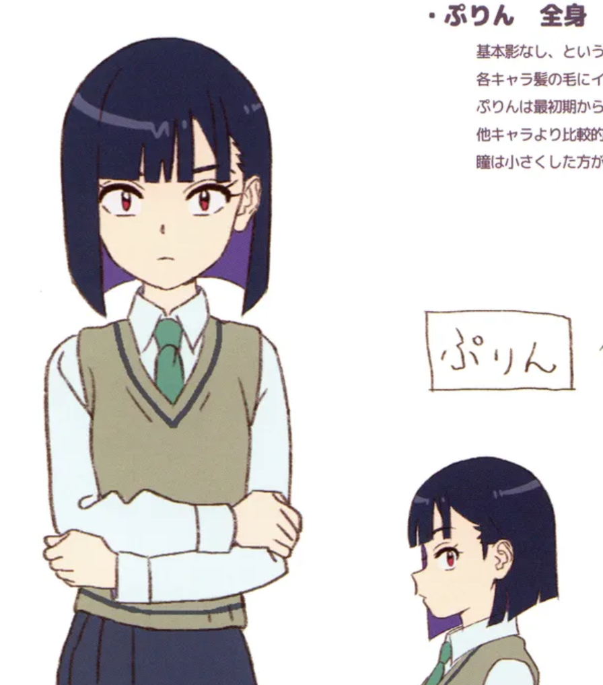

我后面必定会重新回来的，关于男女老幼的脸怎么去画，后面必然要重新研究的，现在有一个基准即可。
有点感叹，我居然在考虑画风了，这是个进步，虽然我没什么实感。
正侧脸
paryi 老师在它的书中多次强调，绘制侧面头发，脸型时，要同时参考正脸和正侧脸，因此，这里研究完正脸后，直接去开始研究正侧脸。
虫原老师的侧脸可以说是他的画风最具特色的地方了，他也不吝啬画侧脸，实际上很多镜头（特别是对百合互动的描绘）都是很需要侧脸的，这里不得不学一下他的侧脸。
但虫原老师一般不画正侧脸，而总是稍微带点仰视或者俯视的角度，不得不说这样能够更加可爱。关于这种角度具体该怎么画……这是个问题。在正侧脸下，稍微的俯仰不会很大地改变脸的轮廓（耳朵可以暗示），需要五官，我猜测特别是眼睛和嘴巴，去表现，眼睛和鼻子的相对位置应当也有影响。（实际描摹结构后发现，虫原老师的仰视正侧脸，头顶会特别短，看起来上庭几乎消失掉了，这个具体在后面学仰视的时候再回顾）

但这里我完全不知道作者是有意地这么做的，还是说他画完草图后觉得合理然后就这样了……这完全没法分析哦。
下面吐槽考虑还是少一些，但好奇心仍旧保持。
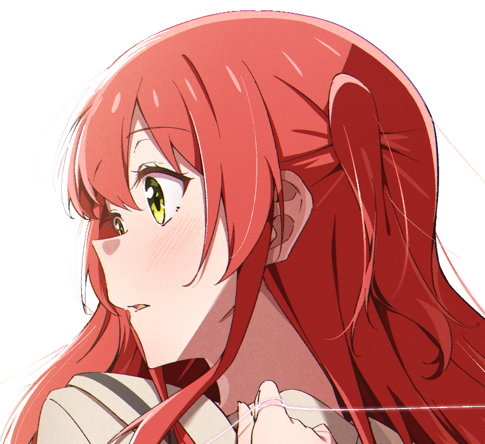
就从这个仰视的正侧去观察吧，差别不会太大，观察到：
- 关于下巴和鼻根的关系，我注意到在虫原老师的画中下巴超出鼻根、同一铅垂线或者下巴更向内收，这些均有……但从特写上看的话，下巴似乎还是稍微比鼻根更向内收的
- 注意鼻子-上嘴唇和下嘴唇-下巴这两段，它们都是几近垂直的，而且下嘴唇和上嘴唇外凸的程度有很大差别（嘴唇的线条恐怕是蕴藏着很多信息量的，后面研究时必须仔细注意）
顺便，我怀疑虫原老师喜欢的头的结构的球的部分可能是椭球体而非正球体。
侧脸如果要提出什么问题的话，就是眼睛和嘴巴的结构了。这里眼睛的话，要认识到眼睛是立体的，就像这样：
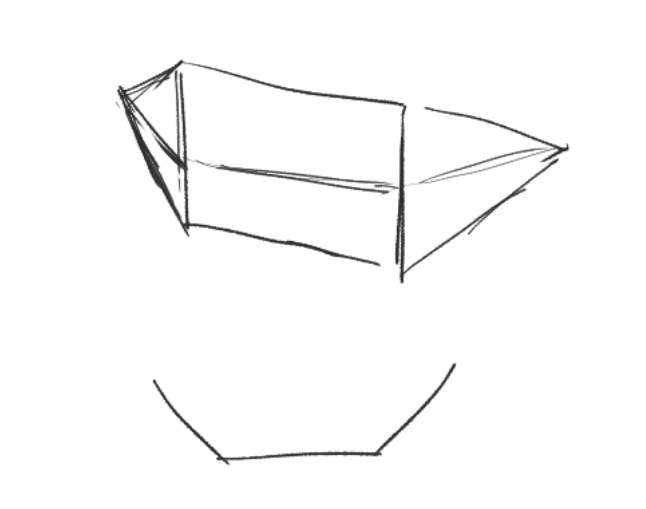
在侧脸，只能看到它的两个面，即：
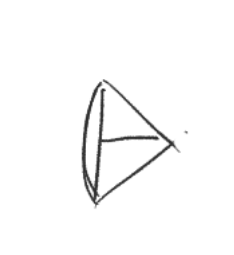
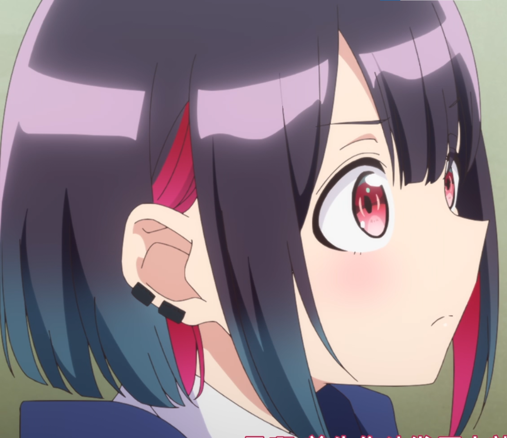
注意睫毛的立体感。注意外眼角的角度，这个角度会随着俯仰角，随着人物的人设（上吊眼，下垂眼）变动。
画侧脸时，把正脸放着作为参照。我相信光学正侧脸是不够的，我得学习其他的侧脸，包括那些对正侧脸进行微妙变动的侧脸，研究它们的差异，才能把正侧脸以及所有侧脸画好。同时，我得给自己强调一下——这一次研究的目的是让我能画出来，而非画好。

顺便，观察我的正侧脸和虫原老师的仰侧脸，以眼睛为基准的话，能发现我的眼睛几乎在头部的中间高度，而虫原老师的则是偏上的，但不得不说后者的感觉让人更加舒服……
同时，其实虫原老师不止画的不是平视的正侧脸（有俯仰），甚至画的也不是正侧脸——总是随着镜头有微妙变化的。明显——纯粹的正侧脸和纯粹的正脸一样，在漫画里是很少出现的。
先把当前进度提交一下……太多了。
本博客所有文章除特别声明外，均采用 CC BY-NC-SA 4.0 协议 ，转载请注明出处！